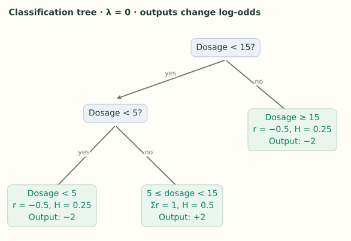
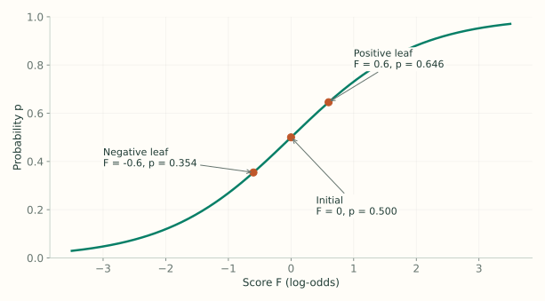

2. Classification: From Corrections to Probabilities
Notes on StatQuest with Josh Starmer · Classification: From Corrections to Probabilities · 25:17 video. Original explanations and redrawn figures accompany the video.
The tree still predicts a correction. For binary classification, however, we add that correction to a log-odds score, then convert the result into a probability.
Two scales: score and probability
Video 1:57 ↗The outcome is whether a drug is effective: $y=1$ for yes, $y=0$ for no. Start every row at probability $p=0.5$, corresponding to score $F=0$:
A positive score means probability above 0.5; a negative score means below 0.5. These are two representations of the same prediction.
| Dosage | Outcome $y$ | Current $p$ | Residual $r=y-p$ | Curvature $h=p(1-p)$ |
|---|---|---|---|---|
| 2 | 0 | 0.5 | −0.5 | 0.25 |
| 8 | 1 | 0.5 | 0.5 | 0.25 |
| 12 | 1 | 0.5 | 0.5 | 0.25 |
| 18 | 0 | 0.5 | −0.5 | 0.25 |
Residual signs tell us the desired direction: lower the prediction for rows with outcome 0, raise it for rows with outcome 1. The curvature will help determine the size of the score correction.
The score changes its denominator
Video 3:21 ↗Classification uses
Regression counted rows in the denominator. Classification instead adds their $p_i(1-p_i)$ values. For now each row contributes 0.25, and we set $\lambda=0$.
All four residuals sum to zero, so the root score is zero. One shared update would cancel the positive and negative requests.
Separate the requests to raise and lower the score
Video 5:44 ↗The lecture chooses dosage $<15$ for the first split. Its left child contains $[-0.5,0.5,0.5]$, while the right contains $[-0.5]$.
The gain is $1/3+1-0=4/3\approx1.33$. Splitting at 5 ties this gain; 15 is the choice shown in the video. A tie does not identify a unique tree.
Now split the left child at 5. This separates $[-0.5]$ from $[0.5,0.5]$:
The alternative threshold 10 gives only $2/3\approx0.67$. The selected tree has three leaves, each containing residuals that agree on the direction of correction.

Cover measures the curvature in a child
Video 9:49 ↗Cover is $H=\sum p_i(1-p_i)$. It excludes $\lambda$. The two singleton leaves above each have cover 0.25; the two-row leaf has cover 0.50.
min_child_weight sets the minimum permitted child cover. With a threshold of 1, none of these tiny leaves qualifies. The lecture relaxes this constraint to build its example; set it explicitly to 0 when reproducing the tree.
Why not just count rows? At $p=0.5$, a row contributes 0.25. At $p=0.99$, it contributes only 0.0099. The same number of rows can therefore have very different cover as predictions change. This constraint is about curvature support, not a fixed row count.
Pruning uses the same bottom-up idea
Video 13:05 ↗Using the lecture’s gains, $\gamma=2$ keeps the lower split because $2.67>2$. The root remains because it leads to that subtree. At $\gamma=3$, the lower split fails; after removing it, the root’s gain of 1.33 also fails.
In this particular first-round example, the remaining root leaf has output zero because the residuals sum to zero. That is why a fully collapsed tree makes no change here.
Calculate the amount to add to the score
Video 14:58 ↗The leaf output is
With $\lambda=0$, a negative singleton produces $-0.5/0.25=-2$. The middle pair produces $1/0.5=2$. Unlike regression, simply averaging residuals would not give these outputs.
The denominator converts a loss-reducing direction into a step on the log-odds scale. The next note derives it from binary log loss. For now, keep the scales straight: $y-p$ measures what is wrong with the current probability; $w$ is the correction we add to the score.
Regularization shrinks this correction. With $\lambda=1$, the singleton becomes $-0.5/1.25=-0.4$, while the positive pair becomes $1/1.5\approx0.667$.
Update the score, then apply sigmoid
Video 17:26 ↗Return to $\lambda=0$ and use learning rate $\eta=0.3$. Dosage 8 reaches the positive leaf:
Dosage 2 reaches a negative leaf, so its score becomes −0.6 and its probability becomes about 0.354. Both predictions move toward their observed labels.

Adding 0.6 directly to probability 0.5 would give 1.1. That invalid result is precisely why we do the addition on the score scale.
Refresh both residuals and curvature
Video 22:02 ↗Before the next tree, recompute $r_i=y_i-p_i$ and $h_i=p_i(1-p_i)$ using the new probabilities.
| Rows | New probability | New residual | New curvature |
|---|---|---|---|
| Dosages 2 and 18; $y=0$ | 0.3543 | −0.3543 | 0.2288 |
| Dosages 8 and 12; $y=1$ | 0.6457 | 0.3543 | 0.2288 |
The curvature happens to match across these symmetric probabilities. In general it differs by row. Build the next tree from these updated quantities, add its scaled output to $F$, and convert to probabilities again.